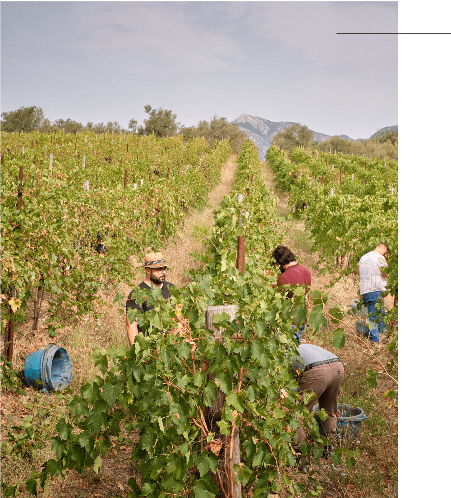
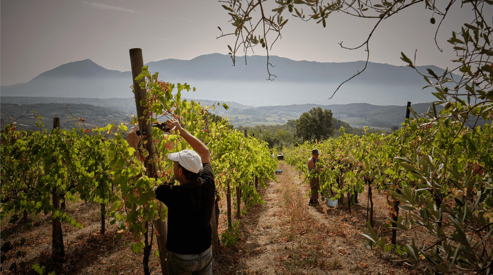

La nostra storia ha origine a Massa Di Faicchio, antico
borgo abbracciato
da soleggiate colline, rigogliosi vigneti,
piccole cantine scavate nel tufo e
secolari leggende.
Cullata da una brezza leggera,
Massa è per noi un locus
amenus, custode della nostra tradizione, testimone
della
storia della nostra famiglia.
La famiglia Di Leone


La nostra storia ha origine a Massa Di Faicchio, antico
borgo abbracciato
da soleggiate colline, rigogliosi vigneti,
piccole cantine scavate nel tufo e
secolari leggende.
Cullata da una brezza leggera,
Massa è per noi un locus
amenus, custode della nostra tradizione, testimone della
storia della nostra famiglia.
La famiglia Di Leone
Il terroir di Terre Massesi è un mosaico
unico di sapori,
mitigato dal
clima mediterraneo.
Nelle nostre vigne, i terreni vulcanici si fondono armoniosamente a quelli
calcarei per dar vita a un ambiente idilliaco per la coltivazione delle uve.
A ciò si unisce l’arte e la cultura millenaria della viticoltura sannita che
definisce il carattere unico e distintivo dei nostri vini.
SORSI DI AUTENTICITÀ